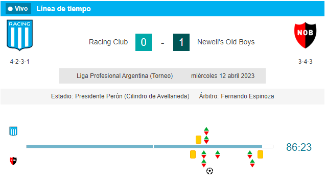
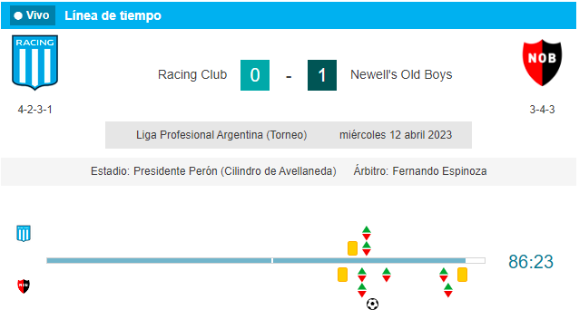

La Academia se mide ante La Lepra en la previa del duelo de Avellaneda
 

Luego de unos días convulsionados en Avellaneda por la renuncia de Fabián Doman a la presidencia de Independiente, Racing recibió a Newell’s en el Cilindro. El duelo correspondiente a la fecha 11 de la Liga Profesional ante la Lepra tuvo un tinte especial por la cercanía del clásico. Ni bien salieron los protagonistas a la cancha, desde las gradas se hizo sentir “que el domingo cueste lo que cueste” hay que ganar. Es que la Academia quiere aprovechar el pésimo momento que vive el Rojo.
Más allá de la rivalidad de la ciudad bonaerense, Fernando Gago no se guardó nada y puso el mejor material que tenía a disposición para enfrentar al elenco rosarino. Con Gabriel Hauche, Matías Rojas, Jonathan Gómez, Paolo Guerrero y Nicolás Reniero, Pintita presentó un equipo ofensivo para sumar los tres puntos que le permitieran acercarse a los puestos de arriba de la tabla. Sin embargo, la primera ocasión clara para abrir el marcador fue para el conjunto de Gabriel Heinze. Una mala salida del ex volante de Argentinos le permitió a Marcos Portillo encarar hacia el arco local, pero en el mano a mano Gabriel Arias demostró su jerarquía al desactivar el peligro. Fue un llamado de atención para el dueño de casa, que se mostraba muy vulnerable por las bandas compuestas por Iván Pillud y Facundo Mura.
hola